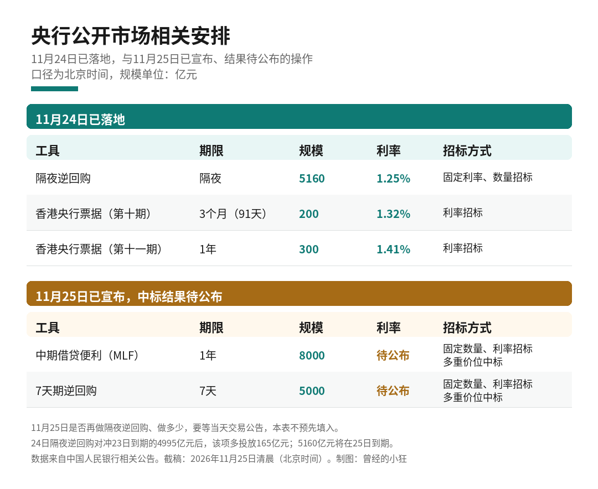
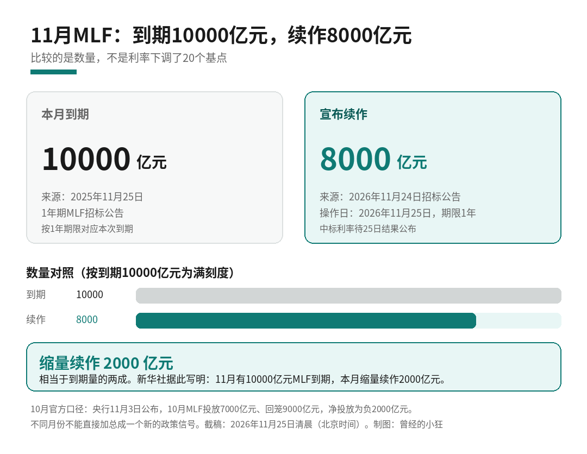
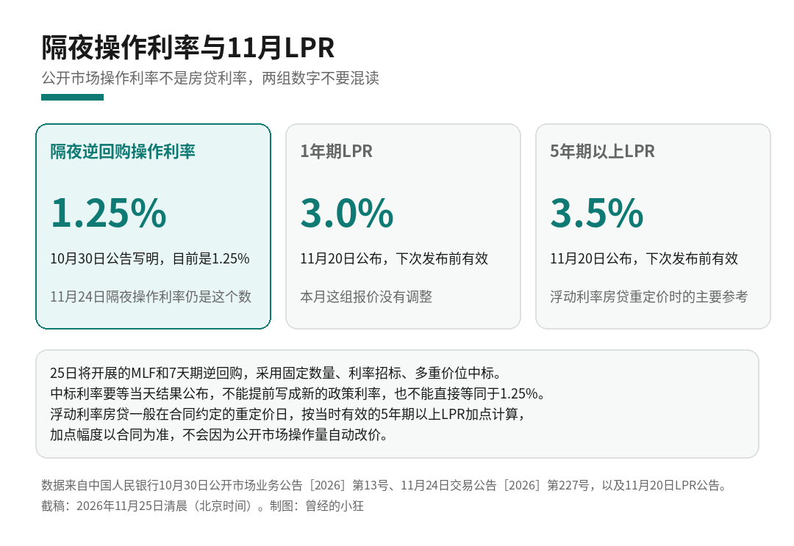

11 月 24 日，中国人民银行连发两条招标公告。一条说，11 月 25 日将以固定数量、利率招标、多重价位中标的方式，开展 8000 亿元中期借贷便利，期限 1 年。另一条说，同一天还将用同样的招标方式，开展 5000 亿元 7 天期逆回购操作。两份公告都写了同一句出发点：为保持银行体系流动性充裕。
对普通读者来说，这两条放在一起，核心不是“央行又放了多少钱”，而是两笔钱的期限不一样，而且本次都采用固定数量、利率招标，与日常隔夜操作的招标方式不同。一个管一年左右的中期资金，一个管跨过月末的一周资金。这两件事都还没有公布中标利率，不能当成一次降息或加息来读。
先看中期这一头。MLF 是央行向符合条件的金融机构提供中期资金的工具，期限这次是 1 年。2025 年 11 月 25 日，央行曾以同样方式开展过 10000 亿元、期限 1 年的 MLF 操作。按 1 年期限计算，这笔资金会在 2026 年 11 月 25 日到期。新华社 24 日据此写明：11 月有 10000 亿元 MLF 到期，本月是缩量续作 2000 亿元。也就是说，25 日会把大部分到期的中期资金续上，但不是按原数全额续完。少续的 2000 亿元，相对到期的 10000 亿元是两成，这说的是数量，不是利率下调了 20 个基点。1 个基点是 0.01 个百分点。
这个数量变化也不是突然出现的。央行 11 月 3 日公布的《2026 年 10 月中央银行各项工具流动性投放情况》里，10 月 MLF 投放 7000 亿元、回笼 9000 亿元，净投放为负 2000 亿元。口径是当月投放对当月回笼。11 月这次如果按 8000 亿元对 10000 亿元到期来算，净回笼规模与 10 月相同，但比的是不同月份，不能直接加总成一个新的政策信号。
短端这一头，5000 亿元 7 天期逆回购对得上月末时点。央行在 10 月 30 日的公开市场业务公告里已经说清楚：从 11 月 2 日起，每个工作日开展隔夜逆回购招标，采用固定利率、数量招标，目前操作利率为 1.25%；7 天期逆回购改成固定数量、利率招标、多重价位中标，主要在税期、月末等时点开展。25 日是 11 月下旬临近月末的交易日，做 7 天期，是在用这个工具覆盖跨月，不是在改隔夜这一档的操作利率。
隔夜、7 天、1 年，钱回去的时点不同。隔夜是做完后下一个工作日就要归还；7 天期可以跨过周末和月末这几天；MLF 则按 1 年安排。把这三笔看成同一件事，或者只盯住其中某一个数字，都容易读偏。

央行 11 月 24 日至 25 日公开市场相关安排。数据来自中国人民银行相关公告，制图：曾经的小狂
同一天白天，公开市场也没有停。央行 24 日以固定利率、数量招标方式开展了 5160 亿元隔夜逆回购，操作利率 1.25%，投标量和中标量都是 5160 亿元，全额满足了一级交易商需求。23 日同一口径的操作是 4995 亿元，利率同样是 1.25%。用这两天的中标量对比，24 日隔夜逆回购对冲前一日到期后，多投放了 165 亿元。这个 165 亿元只覆盖隔夜逆回购这一项：24 日到期的，就是前一天那笔隔夜操作；24 日新做的 5160 亿元，则会在 25 日到期。它不能和香港市场发行的央行票据混在一笔净投放里计算。25 日的账也不能提前轧成一个“净投放”总数。已经确定的是：当天有 5160 亿元隔夜逆回购到期，还有 10000 亿元 MLF 到期；已经宣布将要开展的，是 8000 亿元 MLF 和 5000 亿元 7 天期逆回购。当天还会不会再做隔夜逆回购、做多少，要等 25 日的交易公告，不能把还没发生的隔夜操作先算进去。
央行 24 日还通过香港金融管理局的债务工具中央结算系统，发行了两期央行票据：2026 年第十期 200 亿元，期限 3 个月（91 天），中标利率 1.32%；第十一期 300 亿元，期限 1 年，中标利率 1.41%。这是在香港市场发行的人民币央行票据，和境内隔夜逆回购、MLF 不是同一场操作，但是当天一并披露的官方交易结果。中标利率已经在交易公告里写明，这和尚未公布结果的 25 日 MLF、7 天期逆回购不同。

11 月 MLF 到期 10000 亿元，续作 8000 亿元。到期量来自 2025 年 11 月 25 日 1 年期招标公告，续作规模来自 2026 年 11 月 24 日招标公告，制图：曾经的小狂
有人看到“投放 5000 亿”，容易把它听成降息；看到“少续 2000 亿”，又容易听成收紧。这两边都要分开看，关键是先分清数量和价格，再分清不同的招标方式。
24 日已经做完的隔夜逆回购，用的是固定利率、数量招标：利率先定在 1.25%，再按一级交易商的需求确定数量，当天是全额满足。10 月 30 日公告写明，目前隔夜逆回购操作利率就是 1.25%。24 日的操作，利率仍是这个数。
25 日要做的 MLF 和 7 天期逆回购，用的都是固定数量、利率招标、多重价位中标：规模先定下来，利率由投标形成，不同中标利率可以同时存在。这类操作的中标利率，要等 25 日的操作结果出来后才能知道，现在不能提前写成一个新的政策利率，也不能把它直接等同于 1.25% 的隔夜操作利率。数量上的续作、少续或多投放，不等于宣布加息或降息。
对普通贷款和房贷来说，更直接的参考还是贷款市场报价利率。11 月 20 日，中国人民银行授权全国银行间同业拆借中心公布：1 年期 LPR 为 3.0%，5 年期以上 LPR 为 3.5%，在下一次发布之前有效。也就是说，本月这组 LPR 报价没有调整。
浮动利率房贷一般是在合同约定的重定价日，按当时的 5 年期以上 LPR 加点计算，加点幅度以合同为准。举一个只有说明性质的例子：假设合同约定每年 1 月 1 日重定价，加点为减 20 个基点，那么到了重定价日，执行利率会按当天有效的 5 年期以上 LPR 减 20 个基点计算。11 月 20 日公布的 5 年期以上 LPR 是 3.5%，但这组报价能用到哪一笔贷款上，要看到期那个重定价日当天仍然有效的 LPR，以及合同里的加点，不会因为 11 月 25 日的公开市场操作量自动改价。各家银行、各笔合同的重定价日和加点并不相同，要以自己的合同为准。

隔夜逆回购操作利率与 11 月 LPR。数据来自中国人民银行 10 月 30 日公告、11 月 24 日交易公告和 11 月 20 日 LPR 公告，制图：曾经的小狂
存款利率也不是跟着当天的 MLF 操作量走。央行这次公布的是公开市场操作安排，没有同时宣布调整金融机构存款基准利率。各家银行挂牌的存款利率，以及已经存进去的定期存款在到期前按什么利率计息，仍以银行公示和存单约定为准。
把这几笔账放在一起看：中期资金少续一部分，短端在月末补上一笔 7 天资金，日常的隔夜操作利率还按 1.25% 做。这是在安排流动性的期限和节奏，不是在发布新的存贷款基准。截至 11 月 25 日清晨（北京时间），当天的中标结果尚未见交易公告。等操作结果公布后，再看 MLF 和 7 天期逆回购实际落在什么利率上。
来源清单：
中国人民银行：2026 年 11 月中期借贷便利招标公告：https://www.pbc.gov.cn/zhengcehuobisi/125207/125213/125437/125446/125873/2026112417194622152/index.html
中国人民银行：公开市场逆回购招标公告［2026］第 23 号：https://www.pbc.gov.cn/zhengcehuobisi/125207/125213/125431/5492845/2026112416390750568/index.html
新华社：央行将开展 8000 亿元 MLF 操作（2026-11-24 20:47:59）：https://www.news.cn/20261124/4f01eeb706714139b0d6939673cb6019/c.html
中国人民银行：2025 年 11 月中期借贷便利招标公告：https://www.pbc.gov.cn/zhengcehuobisi/125207/125213/125437/125446/125873/5909382/index.html
中国人民银行：公开市场业务交易公告［2026］第 227 号：https://www.pbc.gov.cn/zhengcehuobisi/125207/125213/125431/125475/2026112408521492245/index.html
中国人民银行：公开市场业务交易公告［2026］第 226 号：https://www.pbc.gov.cn/zhengcehuobisi/125207/125213/125431/125475/2026112309000142020/index.html
中国人民银行：公开市场业务交易公告［2026］第 228 号：https://www.pbc.gov.cn/zhengcehuobisi/125207/125213/125431/125475/2026112413453178865/index.html
中国人民银行：公开市场业务公告［2026］第 13 号：https://www.pbc.gov.cn/zhengcehuobisi/125207/125213/125431/125469/2026103016375865177/index.html
中国人民银行：2026 年 10 月中央银行各项工具流动性投放情况：https://www.pbc.gov.cn/zhengcehuobisi/125207/125213/5727710/2026110316592654224/index.html
中国人民银行：2026 年 11 月 20 日 LPR 公告：https://www.pbc.gov.cn/zhengcehuobisi/125207/125213/125440/3876551/2026112008255480718/index.html
新华社：新一期贷款市场报价利率未作调整（2026-11-20）：https://www.news.cn/20261120/3be19c9469fb4992beda43b8bf6462d2/c.html